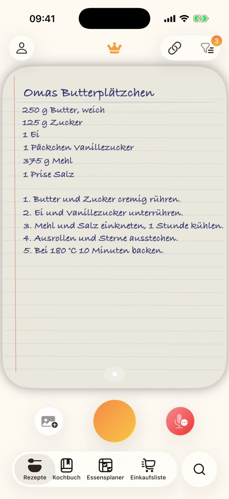
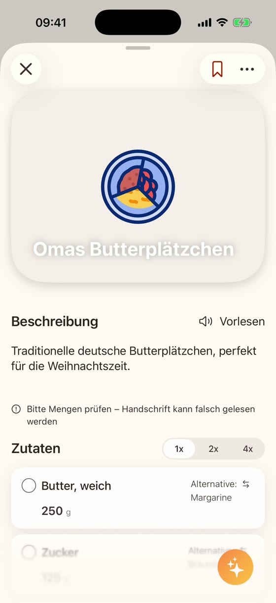
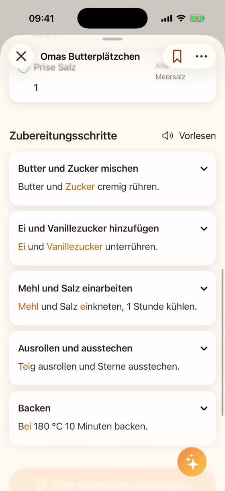

ReciPics
ReciPics
Omas Rezepte für Weihnachtsplätzchen stehen oft auf fleckigen Karteikarten und losen Zetteln in der Schublade. Bevor die Backsaison losgeht, fotografierst du sie in ReciPics ab: Die App macht aus der Karte ein Rezept in deinem Kochbuch auf dem iPhone, mit Zutaten, Mengen und Schritten, die du bearbeiten kannst. Klare Schrift klappt am besten, die Mengen solltest du prüfen. Danach kannst du ein Rezept als Text oder PDF teilen, damit die Familie nach derselben Version backt.
Im App Store ansehen


Echte Screens aus der App. Die Karte ist ein Beispiel, das wir zum Testen erstellt haben: ein digitales Bild in einer Handschrift-Schriftart, kein Foto von echtem Papier. Echte Handschrift ist schwerer zu lesen als diese.
Bevor der Dezember voll wird, holst du die Familienrezepte von den Karten in ein Kochbuch auf deinem iPhone. Heb die Karten auf: Sie sind das Original, und du kannst das Rezept damit vergleichen. Die Rezepte hast du in der Küche und beim Einkaufen dabei.
ReciPics liest Rezepte aus Fotos mit KI, und KI kann Fehler machen. Nach einem Scan zeigt die App den Hinweis „Bitte Mengen prüfen – Handschrift kann falsch gelesen werden“. Vergleiche das Rezept vor dem Backen mit der Karte, vor allem Mengen und Temperaturen. ReciPics kann kurze Schrittüberschriften und vorgeschlagene Zutaten-Alternativen (als „Alternative“ angezeigt) ergänzen. Sie stehen nicht im Original.
Am besten funktionieren klare, flache und gut beleuchtete Fotos. Sehr blasse, verwischte oder eng geschriebene Karten sind schwerer zu lesen.
Prüfe Zutaten bei Allergien oder Unverträglichkeiten selbst; ReciPics kann eine Zutat falsch lesen oder auslassen.
Ein Foto-Scan zählt zum KI-Kontingent der App; ohne Premium ist es begrenzt.
Weitere Wege, Rezepte zu speichern: Handgeschriebene Rezepte digitalisieren · Rezepte aus dem Kochbuch scannen · Digitales Kochbuch
Weihnachtsrezepte von Websites und Blogs: Weihnachtsrezepte speichern: alle in einer App
Über Rezepte von Familie und Freunden entscheiden sie selbst; frag, bevor du sie weitergibst. Rezepte aus Kochbüchern sind in der Regel urheberrechtlich geschützt. Nutze ReciPics nur für dein privates Kochbuch und gib importierte Rezepte, die du nicht weitergeben darfst, nicht weiter und veröffentliche sie nicht. Um das Foto zu lesen, werden das Foto und der auf deinem iPhone erkannte Text an unsere Server und an unseren KI-Anbieter OpenAI (USA) gesendet; siehe Datenschutz.
ReciPics im App Store ladenFür iPhone mit iOS 26 oder neuer.